Nonparametric
Density Estimation
An Introduction
Density Estimation
Suppose a random sample \(X_1, \ldots, X_n\) is drawn from a population with an unknown continuous probability density function \(f(x)\).
Goal: estimate \(f(x)\).
Histogram
Partition the range of data into subintervals:
\[ a_1 < a_2 < \cdots < a_k. \]
For \(x \in (a_i, a_{i+1}]\), \[ \hat f(x) = \frac{\#\{\text{observations} \in (a_i, a_{i+1}]\}}{n(a_{i+1} - a_i)}. \]
Bandwidth
Typically, the intervals have equal length \(h\): \((a_{i+1} - a_i) = 2h\) for \(i = 1, \ldots, k\). The equal interval length \(h\) is often referred to as the bandwidth.
In this case, for any \(x\) within the data range, \[ \hat f(x) = \frac{\#\{\text{observations within } h \text{ of } x\}}{2nh} = \frac{1}{2nh} \sum_{i=1}^n I(|X_i - x| \le h). \]
Narrow intervals (smaller \(h\)): histogram has a choppy appearance, large variance.
Large intervals (larger \(h\)): histogram may lose local features, large bias.
Bandwidth
- Generally, a larger sample size \(n\) requires a smaller \(h\), thus more intervals.
Suggested bandwidth: \[ h = \frac{1.75}{n^{1/3}} S, \] where \(S\) is the sample standard deviation.
Histograms
Histograms provide an idea about the data distribution.
Look at the definition again:
\[ \hat{f}(x) = \frac{ \text{No. of observations within } h \text{ of } x }{n \times 2h} \\ \] or,
\[ \hat{f}(x) = \frac{1}{2nh} \sum_{i=1}^{n} I(|{X_i - x}| \le h). \]
- Narrow intervals (smaller h): histogram has a choppy appearance, large variance.
- Large intervals (larger h): histogram may lose the local feature, large bias.
R hist()
In base R’s
hist()method, you can use thebreakargument:breakscan be one of:
- a vector giving the breakpoints between histogram cells,
- a function to compute the vector of breakpoints,
- a single number giving the number of cells for the histogram,
- a character string naming an algorithm to compute the number of cells (see ‘Details’),
- a function to compute the number of cells.
Sampling distribution
- By default, number of breaks is calculated by using Sturges’ formula.
Histogram with different number of bins

Different h
Different h
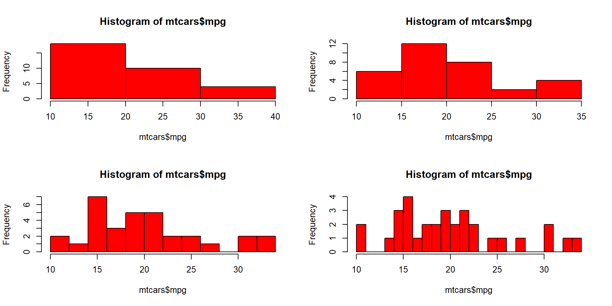Kernel Density Estimation
Drawback of histogram: density estimation is piecewise constant and thus unsmooth.
Main idea of kernel density estimation: instead of counting number of observations within \(h\) of \(x\), we take a certain weighted average of data points near \(x\) to estimate \(f(x)\).
Usually we assign higher weights to data points closer to \(x\), and lower weights to those further away from \(x\).
Kernel Density Estimate:
\[ \hat{f}(x) = \frac{1}{nh} \sum_{i=1}^{n} K\left(\frac{|{X_i - x|}}{h}\right). \] where \(K(\cdot)\) is a Kernel function.
- Choices: \(h\) bandwidth and \(K()\) the kernel.
Choices of kernel function
- Uniform: \(K(u) = \frac{1}{2} I(|u| \le 1)\). Reduces to histogram.
- Gaussian: \(K(u) = \phi(u)\) (standard normal density).
- Triangle: \(K(u) = (1 - |u|) I(|u| \le 1)\).
- Epanechnikov: \(K(u) = \tfrac{3}{4}(1 - u^2) I(|u| \le 1)\).
- Biweight: \(K(u) = \tfrac{15}{16}(1 - u^2)^2 I(|u| \le 1)\).
- Triweight: \(K(u) = \tfrac{35}{32}(1 - u^2)^3 I(|u| \le 1)\).
- Minimum variance kernel (allowing negative weight):
\[ K(u) = \tfrac{1}{8}(3 - 5u^2) I(|u| \le 1). \]
Choice of bandwidth \(h\)
A rule of thumb (Harfle, 1991): \[ h = \frac{1.06}{n^{1/5}} S, \] where \(S\) is the sample standard deviation, or a more robust version such as
- scaled interquartile range: \[ S = \frac{X_{(0.75)} - X_{(0.25)}}{1.34}, \]
- scaled MAD (median absolute deviation): \[ S = 1.4826 \cdot \text{Median}\{|X_i - \text{median}(X_i)|\}. \]
Kernel function shapes
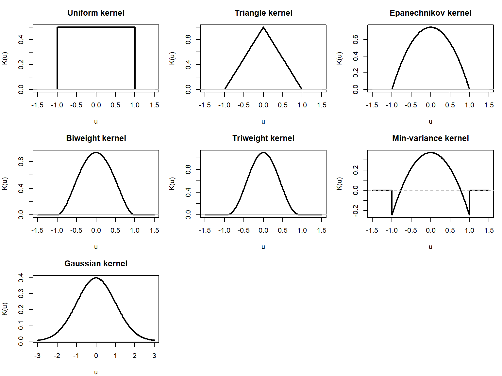Kernel Density Plot
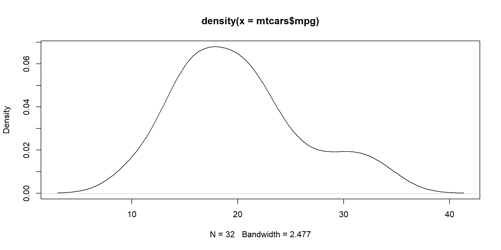Kernel Density Plot with 1/3rd bandwith
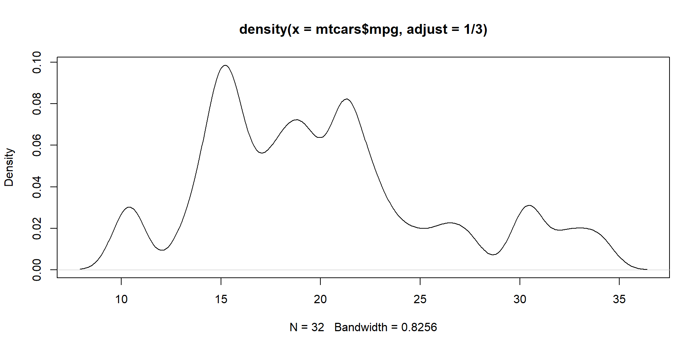Kernel Density Plot with 2x bandwith
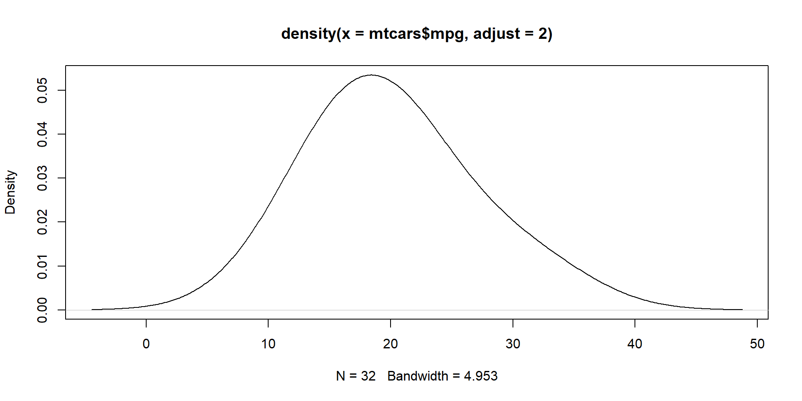Kernel Density Plot with a rectangular kernel
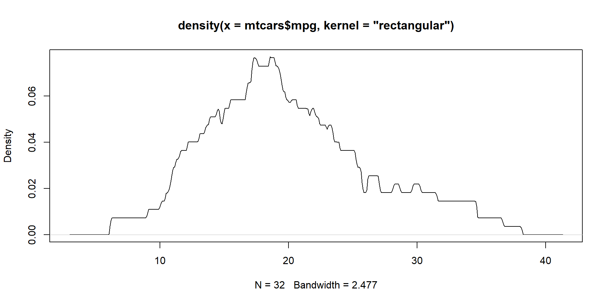Kernel Density Plot with the Epanechnikov kernel

Faithful Geyser
Data set faithful contains 272 durations (mins) of the eruptions of Old Faithful geyser.
Take a look at the data set (the first 5 observations)
eruptions waiting
1 3.600 79
2 1.800 54
3 3.333 74
4 2.283 62
5 4.533 85- Goal is to estimate the density using histogram and kernel estimation.
Different Kernels
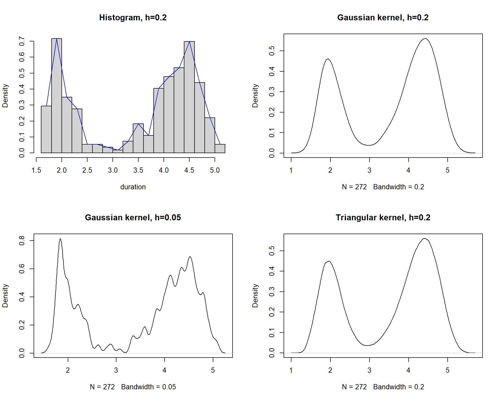We can also use ggplot
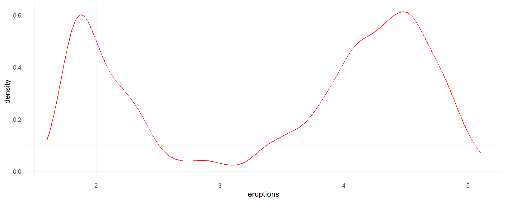Different bandwidth
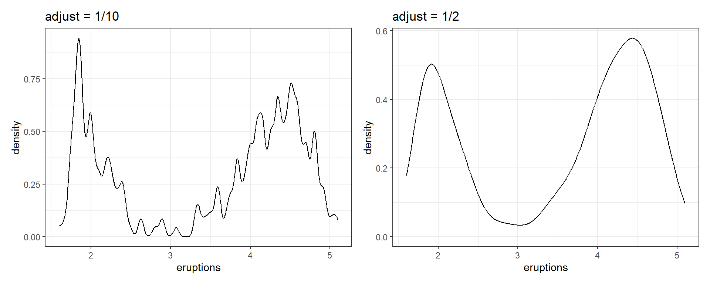Different Kernels
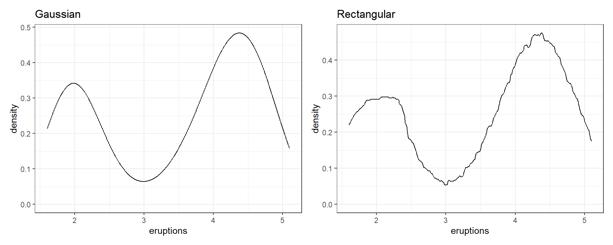Drawing KDE manually
We choose a range of values to plot using the minimum and maximum values of the data, and create a sequence of values using the seq() function. We set the bandwidth for the kernel density estimation using the bw variable.
Next, we use the sapply() function to compute the kernel density estimate for each value in the sequence.
# Generate some sample data
set.seed(123)
x <- rnorm(100)
# Choose a range of values to plot
xmin <- min(x)
xmax <- max(x)
xseq <- seq(xmin, xmax, length.out = 100)
# Set the bandwidth for the kernel density estimation
bw <- 0.5
# Compute the kernel density estimate
kde <- sapply(xseq, function(xi) {
mean(dnorm((xi - x)/bw)/bw)
})Drawing KDE manually
- The R code on the last slide would produce this KDE.
Bivariate kernel density estimation
For bivariate data \((X_i, Y_i)\), \(i = 1, \dots, n\), we want to estimate a joint density \(f(x, y)\).
A bivariate kernel density estimator is \[ \hat f(x, y) = \frac{1}{n |H|^{1/2}} \sum_{i=1}^n K\!\left( H^{-1/2} \begin{pmatrix} x - X_i \\ y - Y_i \end{pmatrix} \right), \] where
- \(K(\cdot)\) is a kernel on \(\mathbb{R}^2\),
- \(H\) is a \(2 \times 2\) bandwidth matrix, symmetric and positive definite.
Product kernels and bandwidth matrix
A simple choice is a product kernel: \[ K(u, v) = K_1(u)\,K_2(v), \] with univariate kernels \(K_1, K_2\).
If we take a diagonal bandwidth matrix \[ H = \begin{pmatrix} h_x^2 & 0 \\ 0 & h_y^2 \end{pmatrix}, \] then \[ \hat f(x, y) = \frac{1}{n h_x h_y} \sum_{i=1}^n K_1\!\left(\frac{x - X_i}{h_x}\right) K_2\!\left(\frac{y - Y_i}{h_y}\right). \]
- \(h_x, h_y\) control smoothing in each direction.
- A full bandwidth matrix \(H\) can capture correlation / anisotropy.
Visualizing bivariate KDE
Common visualizations:
- Contour plots of \(\hat f(x, y)\).
- Image / heat maps (color intensity = density).
- 3D perspective plots.
In R, a convenient workhorse is MASS::kde2d():
- Takes vectors \(x\) and \(y\), bandwidths, and grid resolution.
- Returns a list with grid points and estimated density values.
Generic bivariate KDE
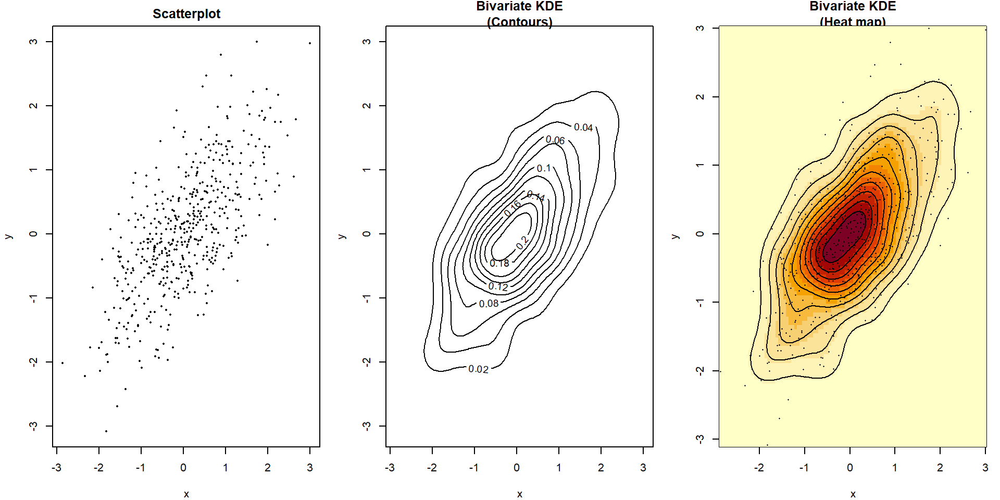R codes
library(MASS)
set.seed(123)
# Simulate generic bivariate data
n <- 500
Sigma <- matrix(c(1, 0.7,
0.7, 1), nrow = 2)
Z <- mvrnorm(n, mu = c(0, 0), Sigma = Sigma)
x <- Z[, 1]
y <- Z[, 2]
# Bivariate KDE on a grid
khat <- kde2d(x, y, n = 100)
par(mfrow = c(1, 3), mar = c(4, 4, 2, 1))
plot(x, y,
pch = 16, cex = 0.4,
xlab = "x", ylab = "y",
main = "Scatterplot")
contour(khat$x, khat$y, khat$z,
xlab = "x", ylab = "y",
main = "Bivariate KDE\n(Contours)")
image(khat$x, khat$y, khat$z,
xlab = "x", ylab = "y",
main = "Bivariate KDE\n(Heat map)")
contour(khat$x, khat$y, khat$z,
add = TRUE, drawlabels = FALSE)
points(x, y, pch = 16, cex = 0.3)3-D

Spatial KDE
- Here is a “simulated” example:
Real data : Chicago Crime
library(tidyverse)
library(MASS)
url.data <- "https://data.cityofchicago.org/api/views/x2n5-8w5q/rows.csv?accessType=DOWNLOAD"
crime_raw <- read.csv(url.data, na.strings = c("", "NA"),
stringsAsFactors = FALSE)
names(crime_raw) [1] "CASE." "DATE..OF.OCCURRENCE" "BLOCK"
[4] "IUCR" "PRIMARY.DESCRIPTION" "SECONDARY.DESCRIPTION"
[7] "LOCATION.DESCRIPTION" "ARREST" "DOMESTIC"
[10] "BEAT" "WARD" "FBI.CD"
[13] "X.COORDINATE" "Y.COORDINATE" "LATITUDE"
[16] "LONGITUDE" "LOCATION" Filter to valid coordinates
- Keep only rows with valid lat/lon, same as filtering out locations without an address.
[1] 237372
ARSON ASSAULT
375 21592
BATTERY BURGLARY
42864 9533
CONCEALED CARRY LICENSE VIOLATION CRIMINAL DAMAGE
265 26266
CRIMINAL SEXUAL ASSAULT CRIMINAL TRESPASS
1620 5256
DECEPTIVE PRACTICE GAMBLING
14338 14
HOMICIDE HUMAN TRAFFICKING
441 17
INTERFERENCE WITH PUBLIC OFFICER INTIMIDATION
892 131
KIDNAPPING LIQUOR LAW VIOLATION
90 200
MOTOR VEHICLE THEFT NARCOTICS
17208 7522
NON-CRIMINAL OBSCENITY
3 52
OFFENSE INVOLVING CHILDREN OTHER NARCOTIC VIOLATION
1555 9
OTHER OFFENSE PROSTITUTION
16671 214
PUBLIC INDECENCY PUBLIC PEACE VIOLATION
10 1031
ROBBERY SEX OFFENSE
6311 1259
STALKING THEFT
564 55377
WEAPONS VIOLATION
5692 Different types of crime
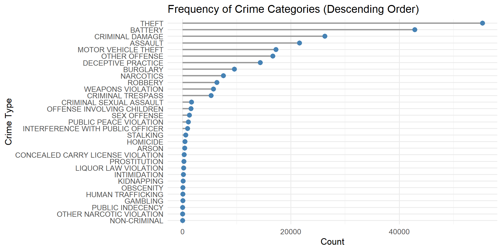Theft
Let us look at only theft and also select a few samples for speed.
Extract coordinates (note: LONGITUDE = x, LATITUDE = y)
chicago_theft <- crime_xy %>%
filter(PRIMARY.DESCRIPTION == "THEFT")
# 3. Subsample (for speed / clarity in plotting)
set.seed(123)
chicago_theft_sub <- chicago_theft %>%
slice_sample(n = min(15000, nrow(crime_xy)))
x <- chicago_theft_sub$LONGITUDE
y <- chicago_theft_sub$LATITUDE
# Bivariate KDE over lon–lat
# Choose grid size; 100x100 is usually plenty
kde_chicago <- kde2d(x, y,
n = 100,
lims = c(range(x, na.rm = TRUE),
range(y, na.rm = TRUE)))Finally, plot the spatial kernel density
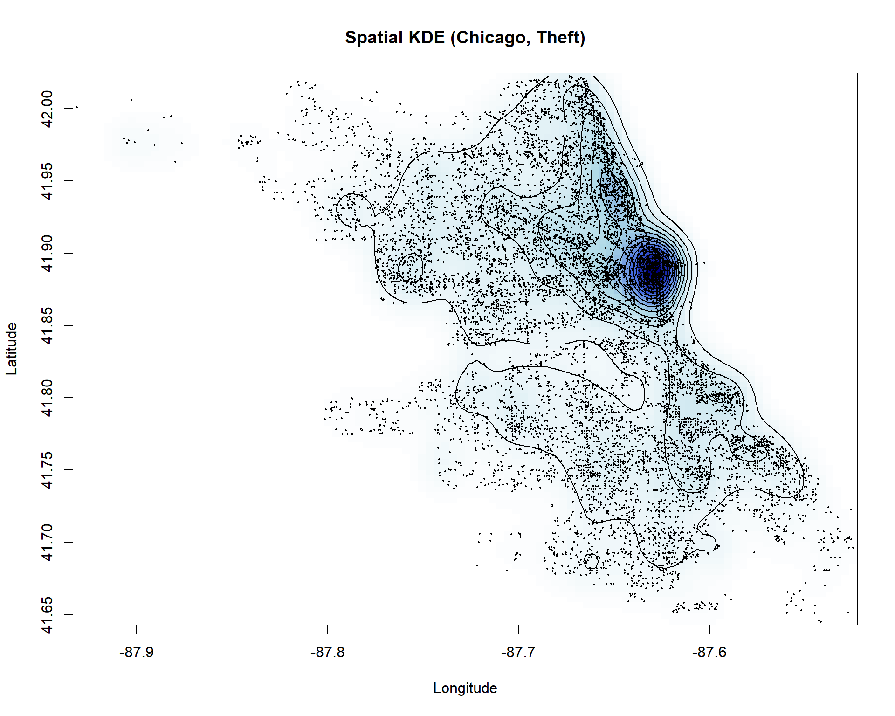KDE and KNN
Histogram and KDE is intimately connected with a nonparametric classification algorithm called k-nearest neighbors.
\(k\)-NN: given a positive integer \(k\), and a new, yet-unforeseen observation \(x_0\), the KNN classifier first identifies the \(k\) points in the training data that are closest to \(x_0\), represented by \(N_0\).
It then estimates the conditional probability for class j as the fraction of points in \(N_0\) whose response values equal \(j\):
\[ P(Y = j | X = x_0) = \frac{1}{k} \sum_{i \in N_0} I(y_i = j) \]
- Finally, \(k\)-NN classifies the test observation \(x_0\) to the class with the largest probability.
KNN
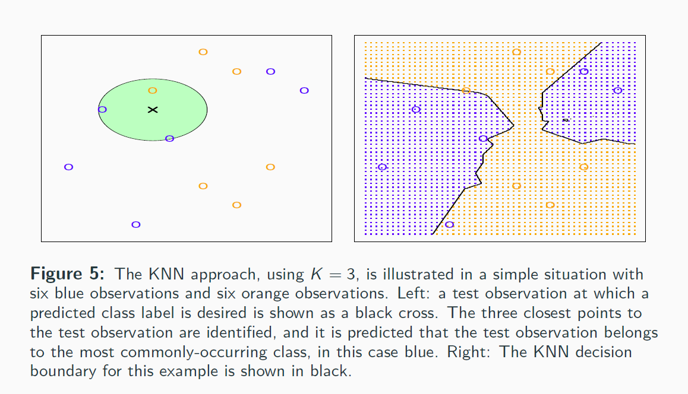
KNN vs KDE
Think of nearest neighbour as a density estimation strategy.
In KDE or histogram, we fix an interval or region (V) and calculate how many points lie within (K).
In K-nearest neighbour, you fix the number of neighbours (K) centered on x, and let the region grow to a volume \(V^*\).
The region \(V^*\) will contain k out of n data points, and we can get: \[ p(x) \approx \frac{k}{nV^*} \]
In histogram of KDE, h acts as smoothing parameter, in k-NN, k acts as a smoothing parameter.
Conclusion
These methods KDE or KNN works very well in smaller dimensions and fail miserably in higher dimensions.
In higher dimension, most of the volume is confined within a small radius and distance and neighbours lose their usual meaning.
One needs different methods for classifying higher dimensional data.